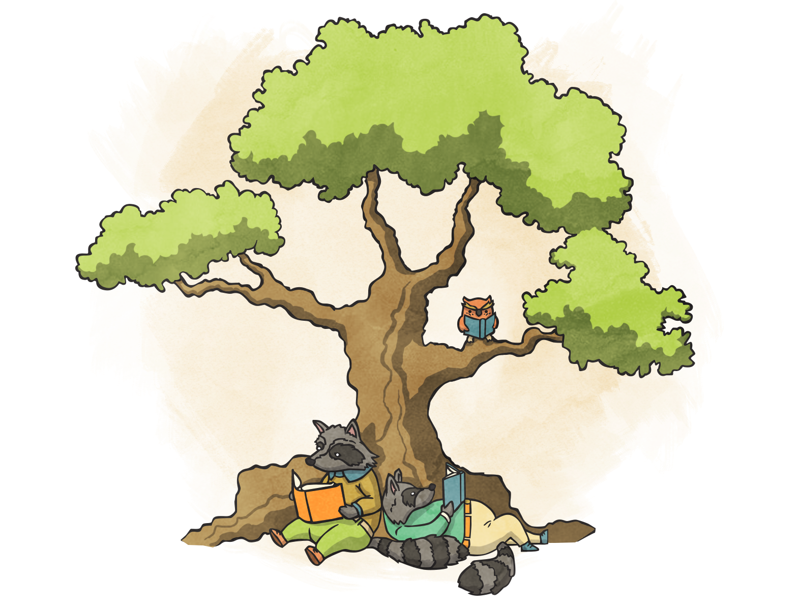
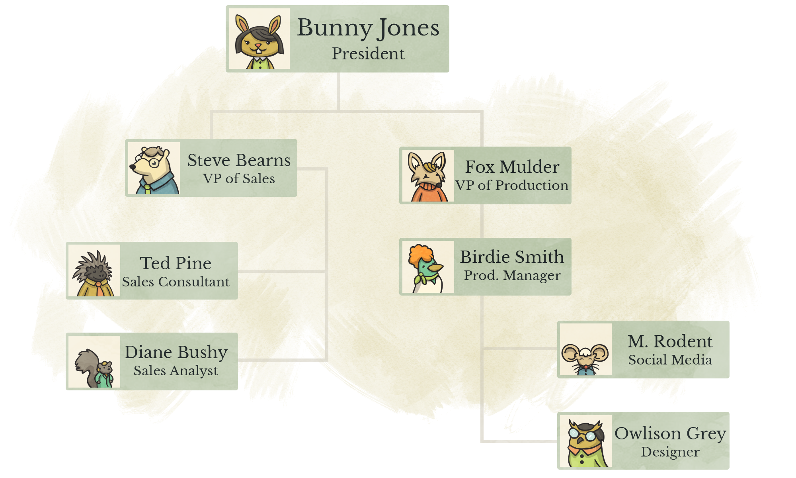

Trees, at first glance, are very similar to Linked Lists. They are comprised of Nodes, just like a Linked List but they have two main differences.
Fig. 1
(A)
/ \
(B) (C)
/ \
(D) (E)
Instead of a head, we have a root, our Node labelled A. A's children (not references) are B and C. There B and C's parent is A. We would say our "leaf Nodes", Nodes that have no children, are D and E. In addition, D and E have a common ancestor in A.
In addition, this Tree would have a depth of 2. We can also have a Tree that looks like the below. Unless we specify a type of Tree, by default there are no limit to the number of children per Node but a Tree is always defined by having a root.
The above figure is a very simple Tree. Each Node (called TreeNode for this instance) would look like the below, in code:
function TreeNode(value) {
this.value = value
this.children = []
}
Fig. 2
(A)
/ | \
(B) (C) (D)
Breadth First Search (BFS) is an algorithm that goes through our Tree, in each level, and returns and/or examines in the Nodes, by level of the Tree.
For instance, in Fig. 1, we would return the following order: A, B, C, __D, E.
When our Tree is very wide, this algorithm can be a bit slow but may be advisable to use when our Tree is a skinny and has many levels.
Depth First Search (DFS) is an algorithm that goes through our Tree, getting all the way to the bottom, then coming back up, going through each first child, recursively, labelling it discovered and moving on to the next.
In Fig. 2, we would return the following order: A, B, D, C, E.
Notice the difference from BFS, where we get to the bottom of the Tree quickly. This is optimal for a shallow Tree, that may be a bit on the wider side.
Binary Trees put some conditions are our Nodes.
left_child must have a lesser value than the parentright_child must have an equal or greater value than the parentAn example of our Binary Tree Node (BTNode) would look like, in code:
function BTNode(value) {
this.value = value
this.left_child = null
this.right_child = null
}
And we will use a BinaryTree wrapper Object around our Nodes, much like our Linked List chapter.
function BinaryTree() {
this.root = null
this.add = function(value) {
if (this.root == null) {
this.root = new BTNode(value)
} else {
recursiveAdd(this.root, value)
}
}
function recursiveAdd(node, value) {
if (value >= node.value) {
if (node.right_child == null) {
node.right_child = new BTNode(value)
} else {
recursiveAdd(node.right_child, value)
}
} else {
if (node.left_child == null) {
node.left_child = new BTNode(value)
} else {
recursiveAdd(node.left_child, value)
}
}
}
}
Like our LinkedList, we can utilize recursion for additions to our Binary Tree.

Morse Code is an alphabet broken up into dashes and dots. It is actually broken into a Binary Tree structure.
Using the image provided, implement a Morse reader, that accepts a String as an argument
Implement a delete(value) method on our BinaryTree.
Based on the Wikipedia Pseudocode, implement BFS on a Tree.
Based on the Wikipedia Pseudocode, implement DFS on a Tree.
Trees are an important data structure. The DOM in this webpage is a Tree. MongoDB, a popular No-SQL database, uses Trees. Object hierarchy and understanding inheritance as it pertains to programming can be displayed with a Tree.
Understanding them is important and leads into further data structures, such as the below mentioned Graphs.
Graphs, to keep it short, are a "root-less" Tree. There is no one single starting point. They have Vertices (instead of Nodes) and Edges (instead of Children). They can be directional:
// B is an Edge to A but A is not an Edge to B
(A) -> (B)
Bi-directional:
// A and B are Edges to each other
(A) <-> (B)
or even contain a cycle:
// A to B to C to A ... etc.
(A) -> (B)
^ /
\ v
(C)
LinkedIn, your friends on Twitter or Facebook and other popular apps all utilize a Graph in order to give you "2nd degree relationships" and so forth.
In addition, we can use our DFS/BFS algorithms to search for a Vertex. For the purpose overall of this text, I won't go into them too much but if you have the time and are interested, I highly reccomend checking it out.
We can also weight the Edges in a Graph. This allows us to represent travel time, scheduling and other applications.
{kind=link}